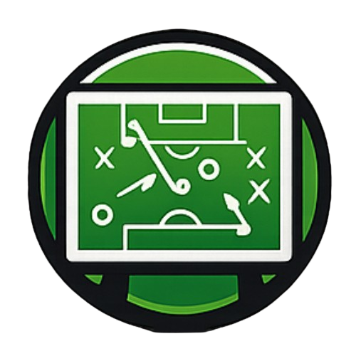
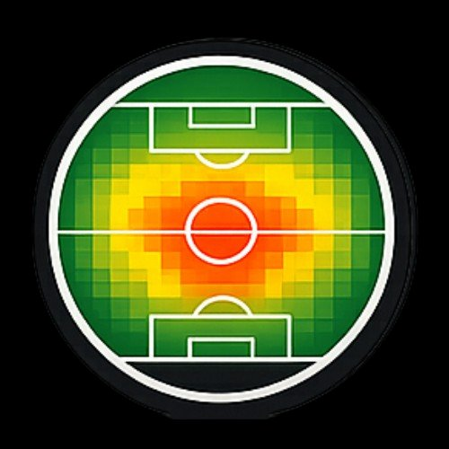
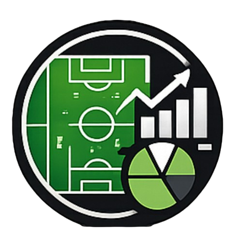

La IA analiza los datos reales de tu partido — cada jugada, zona y patrón — y te da el análisis táctico que potencia tus decisiones como entrenador.
1 partido gratis · sin tarjeta · sin compromiso
Seis pasos. Como una jugada de ataque: cada pase lleva al siguiente, hasta el análisis final.
GoPro, Veo, móvil… cualquier grabación sirve.
Público u oculto (no privado). Copia la URL.
Jugadores y formación. Se guardan automáticamente.
Pulsa jugador + acción con el vídeo. Pausa y rebobina.
Campograma, calor, gráficas por tramos. En segundos.
Análisis de zonas, pressing y secuencias post-partido.
demo.mp4 · 02:00 · tactiqfutbol.es
Todo lo que necesita un analista. Nada de lo que no necesita un entrenador de base.
+20 tipos de jugada. Reproduce el partido con la URL de YouTube y pulsa jugador + acción. Cada evento queda con su minuto y zona exacta.
Visualiza dónde ocurrió cada jugada en el campo. Filtros por tipo de acción y por jugador.
Zonas de actividad por jugador filtradas por tipo de acción. Identifica patrones de presencia en campo.
La IA recibe el partido completo. Pregunta en lenguaje natural, obtén análisis concreto de tu partido.
Evolución en tramos de 15 minutos. Identifica cuándo pierde intensidad tu equipo.
Pantalla completa con el resumen del partido analizado. Ideal para la charla pre-partido siguiente o revisión con el equipo.
Todos los partidos guardados en la nube. Revisa cualquier jornada y compara evolución de temporada.
Genera imagen del análisis y compártela en WhatsApp o Instagram. Sin diseñar nada.
Funciona en cualquier navegador web. Desde el ordenador, tablet o el móvil. Sin descargas, sin actualizaciones, sin app.
Analiza tu primer partido sin tarjeta. Si convence, elige plan. Sin permanencia.



Por fin una herramienta de análisis que puedo usar yo solo, en casa, viendo el vídeo del partido tranquilamente.
Le pregunté a la IA dónde perdíamos el balón y me dio un análisis de zonas que yo mismo no había identificado.
El Modo Vestuario en el descanso fue diferente. Los jugadores entienden mejor el partido cuando lo ven en datos.
// testimonios fase beta · pronto serán reales
No. Funciona completamente en el navegador. Abre la web desde cualquier dispositivo y ya está.
Con cualquiera. GoPro, Veo, cámara de la instalación, móvil… Súbelo a YouTube (puede ser oculto) y pega la URL en la plataforma. Eso es todo.
Al registrarte tienes 1 partido de prueba completo sin tarjeta: etiquetado, análisis, chat IA (10 preguntas) y compartir el resumen. Si convence, eliges plan.
La IA recibe el partido completo: cada evento, su minuto, jugador, zona, secuencias previas a gol y pressing. Respuestas tácticas concretas de tu partido, no genéricas.
Sí. Sin permanencia. Cancelas en cualquier momento y mantienes el acceso hasta el final del período pagado.
Tu primer partido es gratis. Sin tarjeta. Sin compromiso.
Analizar mi primer partido — gratis